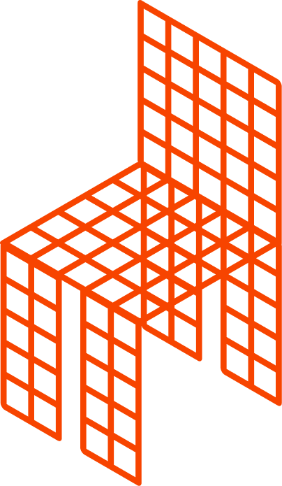

Skip to content

TR
01
Capture
01/04
Linking
Session
—
VRAM
—
Model
Qwen-Image-2.1 ·
FP8
Tensor
Room
Photograph a room · pick what changes · see it redesigned
01
Your room
◉
Take photo
Opens camera
▤
Choose photo
From library
—
Change photo
02
What should change?
Objects
03
Tap what to change
0 selected
Change them to
04
Result
Before
After
—
Start again with a new photo
Working
00:00.0
Take or choose a photo